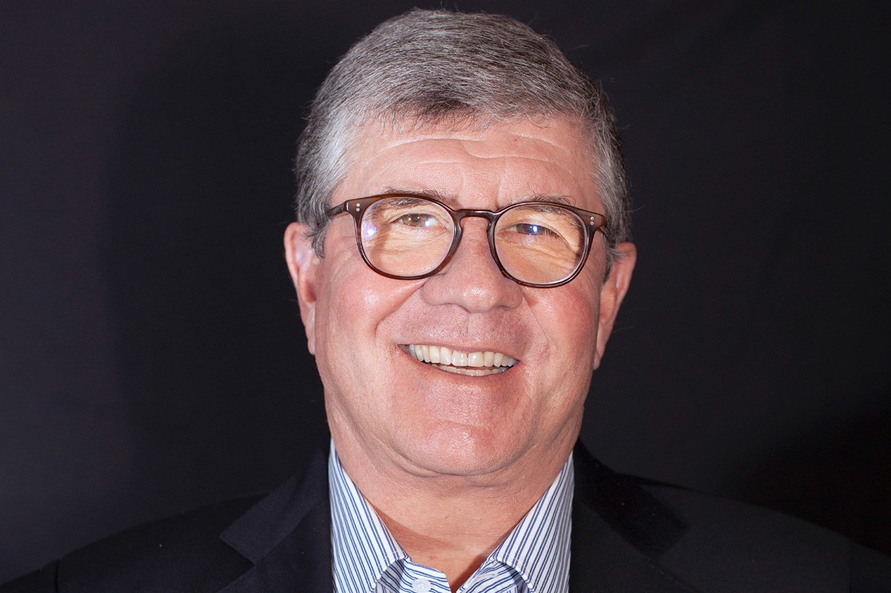
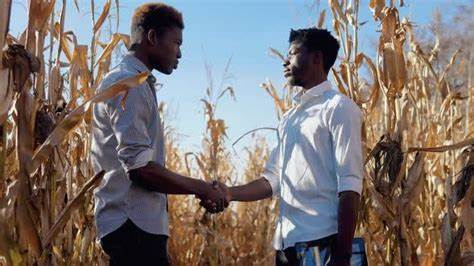

Inclusão ao Campo 4.0
De acordo com as pesquisas, a tecnologia no campo veio para “mudar a forma como o produtor gerencia todos processos de plantio”, atualmente lidamos com o Campo 4.0 (se caracteriza pela utilização de tecnologias que permitem a coleta, o processamento, a análise e a integração de dados agronômicos. Exemplo: utilização de softwares, computadores ou sistemas para fazer o monitoramento da lavoura, automatizar os processos, conectar máquinas agrícolas), que visa aumentar a produtividade e que não é acessível para os pequenos produtores rurais (os que operam nos menores módulos de produção e utilizam mão de obra familiar), e costumam ser afro-brasileiros, ribeirinhos e indígenas. Pelo alto custo das tecnologias de automação, há uma falta de democracia se tratando do acesso á mesma.
Foi feito uma entrevista com um pequeno produtor rural Ribeirinho que reside no município de Serra do Ramalho-ba, onde o mesmo expôs seu relato sobre sua grande dificuldade para lidar com o atual tempo de seca, pois para conseguir produzir nesse cenário há uma necessidade de irrigação intensa e até essas simples tecnologias, exigem de um custo que o mesmo declarou não ter para então obter sucesso em suas plantações.
Vídeo da discente Gabriela Castro do Instituto Federal-Campus Bom Jesus da Lapa fazendo entrevista com pequeno produtor rural Ribeirinho Marcelino Pereira Pinto.De acordo com a Revista Forbes (As maiores empresas do agronegócio brasileiro) a Cosan é a 2ª maior empresa e segue no ramo da Agroenergia, fundada em 1936, em Piracicaba (SP), “A Cosan nasceu quando os irmãos ´Pedro Ometto e João Ometto associaram-se ao empresário Mário Dedini para comprar a usina Costa Pinto, o grupo chegou a ser o maior produtor de açúcar e álcool do mundo”
 Rubens Ometto Silveira o fundador líder e presidente do conselho do Grupo Cosan.O Brasil está entre os 5 maiores produtores agrícolas do mundo, e o estado que mais se destaca no setor agrícola é o Mato grosso (a população é composta marjoritariamente por migrantes do Sul). O ministério da Agricultura estima que a produção nacional de grãos(o Brasil é o 4º maior produtor de grãos, com 7,8% da produção global), cresça 27% até 2030, e mesmo com toda essa produção e crescimento, apenas 47% dos produtores utilizam tecnologias de alta precisão (dado da safra de 2019). De acordo com o trabalho “O Estado Atual da Agricultura Digital no Brasil, a oferta de tecnologias para o produtor rural vem expandindo no país e os dois protagonistas são: As empresas de máquinas e equipamentos, e a startups agrícolas.
Participação Racial nas Decisões Tecnológicas
A inclusão de vozes raciais diversas na tomada de decisões sobre o desenvolvimento e implementação de tecnologias agrícolas no campo é um tema relevante e atual, que envolve questões de equidade, justiça e sustentabilidade. A agricultura familiar, que representa uma parcela significativa da produção agrícola brasileira, é composta por uma diversidade de grupos sociais, culturais e étnicos, que possuem saberes, demandas e necessidades específicas. No entanto, muitas vezes esses grupos não são considerados ou consultados na elaboração e na difusão de tecnologias agrícolas, que tendem a seguir um modelo de modernização baseado na mecanização, na utilização de insumos agroquímicos e genéticos e na padronização da produção.
 Representatividade racial em tomada de decisão.Assim, é fundamental que as vozes raciais diversas sejam ouvidas e respeitadas na tomada de decisões sobre o desenvolvimento e implementação de tecnologias agrícolas no campo, de forma a garantir que as tecnologias sejam adequadas, acessíveis, participativas e inclusivas, e que contribuam para o fortalecimento da agricultura familiar e para o desenvolvimento rural sustentável.
Portanto, é preciso reconhecer e valorizar os conhecimentos tradicionais e locais dos agricultores familiares, que são fruto de uma longa história de interação com o ambiente e de resistência às adversidades. Esses conhecimentos podem ser fontes de inovação e de soluções para os desafios atuais e futuros da agricultura. A inclusão de vozes raciais diversas na tomada de decisões sobre o desenvolvimento e implementação de tecnologias agrícolas no campo é, portanto, uma forma de promover a diversidade, a democracia e a dignidade no meio rural.